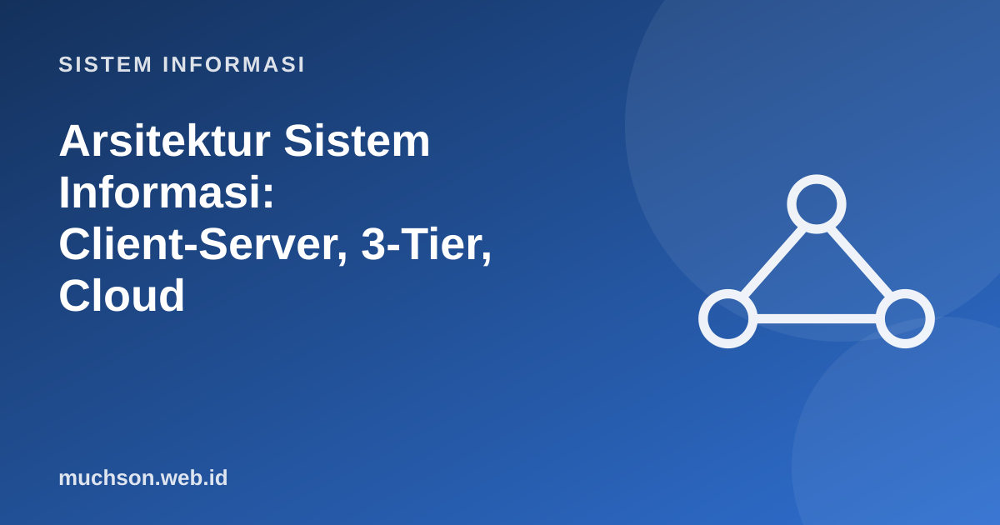

Beranda › Artikel › Sistem Informasi
Sistem InformasiArsitektur Sistem Informasi: Client-Server, 3-Tier, Cloud
Arsitektur menjawab pertanyaan: bagaimana bagian-bagian sistem disusun dan saling berkomunikasi? Pilihan arsitektur memengaruhi biaya, kecepatan, keamanan, dan kemudahan perubahan selama bertahun-tahun, jauh lebih besar daripada pilihan bahasa pemrograman.
Sebaiknya sudah paham: konsep sistem informasi, jaringan dasar

Setelah membaca dan mencoba materi ini, Anda mampu:
- menggambarkan evolusi arsitektur dari mainframe ke cloud
- menjelaskan pola client-server dan arsitektur tiga lapis
- membedakan IaaS, PaaS, dan SaaS serta model penerapan cloud
- membandingkan monolit dan microservices
- menilai skalabilitas vertikal dan horizontal serta ketersediaan
Evolusi singkat
Client-server dan arsitektur tiga lapis
| Lapisan | Tanggung jawab | Contoh teknologi |
|---|---|---|
| Presentasi | Tampilan dan interaksi pengguna | HTML/CSS/JavaScript, React, Flutter |
| Logika bisnis | Aturan dan proses (validasi, perhitungan) | Laravel, Spring Boot, Node.js |
| Data | Penyimpanan dan pengambilan data | PostgreSQL, MySQL, MongoDB |
Aturan emas: jangan menaruh aturan bisnis di klien. Validasi di browser hanya kenyamanan pengguna; pengguna jahat dapat melewatinya. Server selalu memvalidasi ulang.
Cloud computing
NIST mendefinisikan cloud sebagai model akses jaringan sesuai permintaan ke sumber daya komputasi bersama yang dapat disediakan dan dilepas dengan cepat. Ciri pentingnya: layanan mandiri sesuai permintaan, akses lewat jaringan, penyatuan sumber daya, elastisitas cepat, dan pemakaian yang terukur.
| Model layanan | Anda mengelola | Penyedia mengelola | Contoh |
|---|---|---|---|
| IaaS | OS, runtime, aplikasi, data | Server, jaringan, penyimpanan fisik | Mesin virtual AWS EC2, Google Compute Engine |
| PaaS | Aplikasi dan data | OS, runtime, infrastruktur | Cloudflare Workers, Heroku, Vercel, Google App Engine |
| SaaS | Konfigurasi dan data pengguna | Hampir semuanya | Gmail, Google Workspace, Microsoft 365, Moodle Cloud |
Monolit atau microservices
Banyak organisasi memulai dengan monolit modular dan memecahnya menjadi layanan hanya ketika ada alasan nyata (tim besar, bagian dengan beban sangat berbeda). Microservices memindahkan kompleksitas dari kode ke operasi; bila tim kecil, harganya sering terlalu mahal.
Skalabilitas dan ketersediaan
| Pendekatan | Arti | Kelebihan | Keterbatasan |
|---|---|---|---|
| Vertikal (scale up) | Menambah CPU/RAM pada satu mesin | Sederhana, tanpa ubah aplikasi | Ada batas, satu titik kegagalan |
| Horizontal (scale out) | Menambah banyak mesin di belakang penyeimbang beban | Hampir tanpa batas, tahan gagal | Aplikasi harus dirancang tanpa keadaan lokal (stateless) |
# Ketersediaan: berapa lama boleh mati dalam setahun?
menit_setahun = 365 * 24 * 60
for target in [99.0, 99.5, 99.9, 99.95, 99.99]:
mati = menit_setahun * (1 - target / 100)
print(f"{target:>6}% -> boleh mati sekitar {mati:7.0f} menit/tahun ({mati/60:5.1f} jam)")
# Komponen berantai: ketersediaan total = hasil kali
komponen = [0.999, 0.999, 0.9995] # web, aplikasi, basis data
total = 1
for k in komponen: total *= k
print(f"tiga komponen berantai: {total*100:.3f}% (lebih rendah dari komponen terlemah)")
# dua server paralel (salah satu cukup)
tunggal = 0.99
paralel = 1 - (1 - tunggal) ** 2
print(f"satu server 99% -> dua server paralel: {paralel*100:.2f}%") 99.0% -> boleh mati sekitar 5256 menit/tahun ( 87.6 jam)
99.5% -> boleh mati sekitar 2628 menit/tahun ( 43.8 jam)
99.9% -> boleh mati sekitar 526 menit/tahun ( 8.8 jam)
99.95% -> boleh mati sekitar 263 menit/tahun ( 4.4 jam)
99.99% -> boleh mati sekitar 53 menit/tahun ( 0.9 jam)
tiga komponen berantai: 99.750% (lebih rendah dari komponen terlemah)
satu server 99% -> dua server paralel: 99.99%
1. Gambarkan arsitektur tiga lapis untuk aplikasi KRS kampus.
2. Sebutkan satu keuntungan dan satu kerugian cloud publik bagi UMKM.
3. Mengapa aplikasi stateless memudahkan scale out?
4. Hitung ketersediaan dua komponen berantai masing-masing 99,5%.
- Arsitektur berevolusi dari mainframe ke client-server, tiga lapis, cloud, dan microservices.
- Tiga lapis memisahkan presentasi, logika, dan data; aturan bisnis ada di server.
- IaaS, PaaS, SaaS membedakan pembagian tanggung jawab dengan penyedia cloud.
- Monolit sederhana; microservices fleksibel tetapi menuntut operasi matang.
- Redundansi menaikkan ketersediaan; komponen berantai menurunkannya.
Tanya jawab
Apa itu serverless?
Apa itu kontainer?
Apa bedanya skalabilitas dan performa?
Referensi
- NIST SP 800-145: The NIST Definition of Cloud Computing
- Martin Fowler: Microservices
- Kenneth C. Laudon dan Jane P. Laudon, Management Information Systems: Managing the Digital Firm (Pearson)
- Martin Kleppmann, Designing Data-Intensive Applications (O'Reilly, 2017)